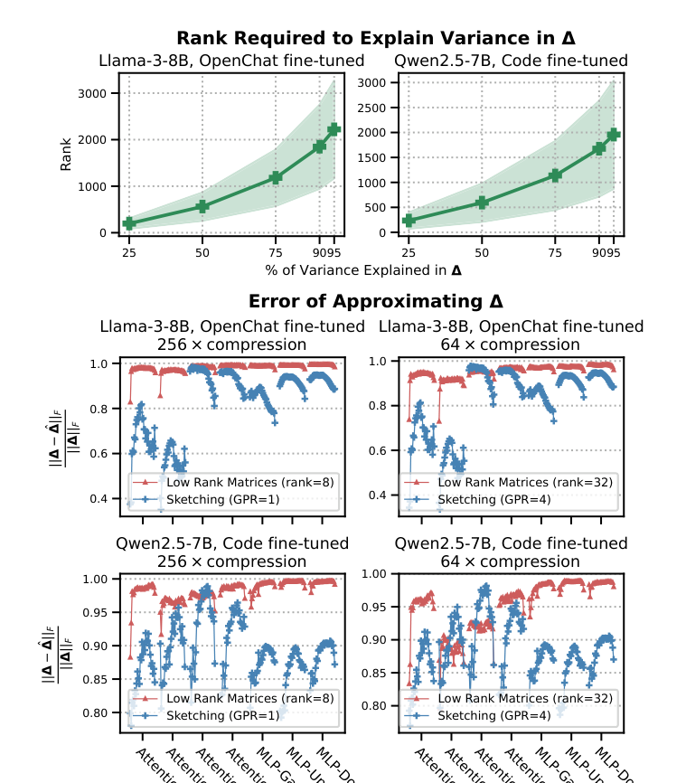
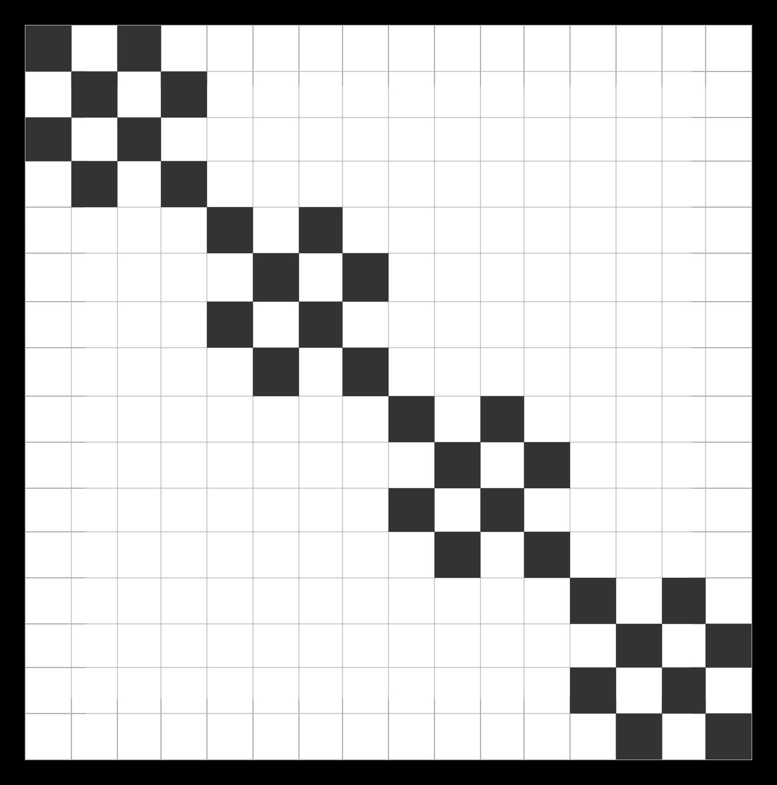

FastVideo
An open-source framework for fast video generation, with sparse attention, distillation, and optimized inference for diffusion video models. GitHub
An open-source framework for fast video generation, with sparse attention, distillation, and optimized inference for diffusion video models. GitHub

Unified compressive adaptation of LLMs with sketching. Fine-tune compressed models directly using parameter-sharing sketches. ICML 2025

Fast concurrent LLM adapter serving with structurally sparse adapters, using custom Triton kernels and CUDA graphs. Findings of EMNLP 2024
Evaluated PEFT methods and 4-bit quantization for aligning small LLMs (Falcon, Gemma, Phi-2) on domain-specific tasks.
A network accessible document database written in Golang with RESTful queries, updates, and subscriptions.